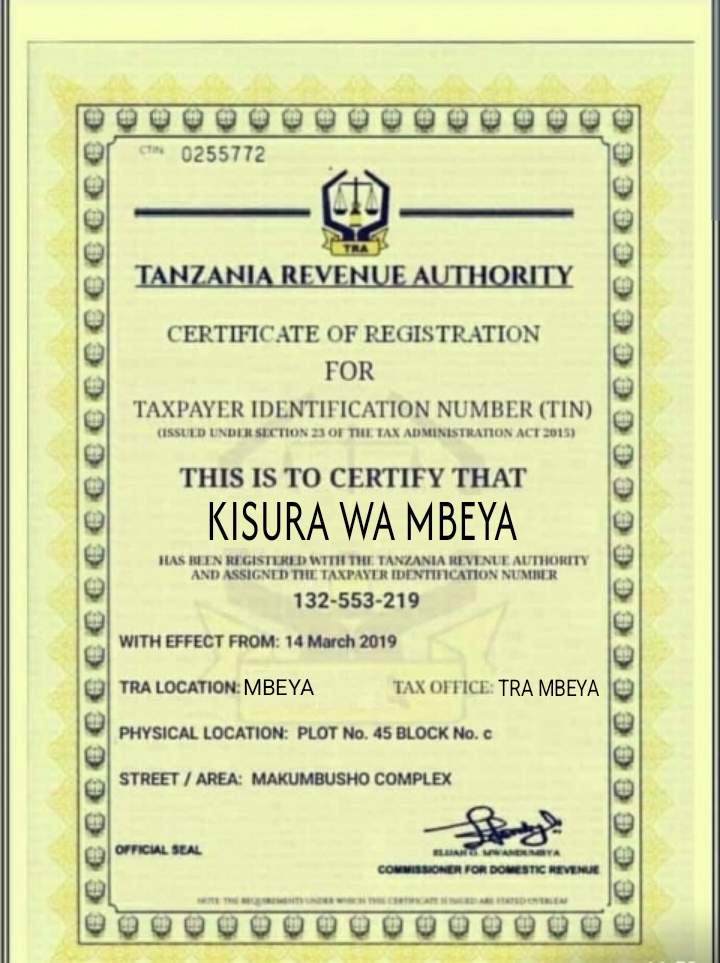

Tunatoa mikopo ya haraka kwa wajasiliamali, wafanyakazi na wakulima.
Mkopo wako unatolewa baada ya kukamilisha akiba yako kama dhamana.
Huduma ni salama, ya uhakika na inayofanyika mtandaoni.
Uthibitisho wa Uhalali

Tuna vibali halali vya utoaji wa mikopo
Maoni ya Wateja Wetu
Asha M. – Nilipokea mkopo ndani ya dakika tatu tu
John K. – Huduma ni ya haraka na salama
Neema S. – Akiba yangu nilirejeshewa baada ya kumaliza